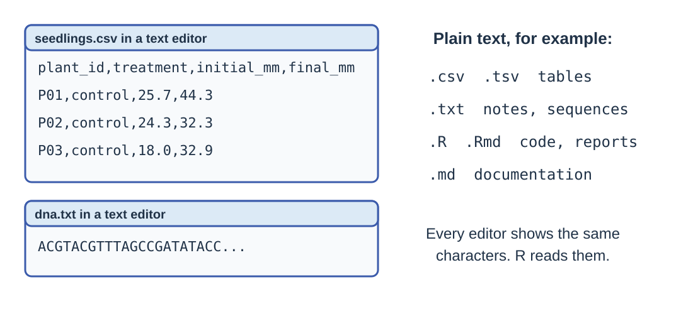
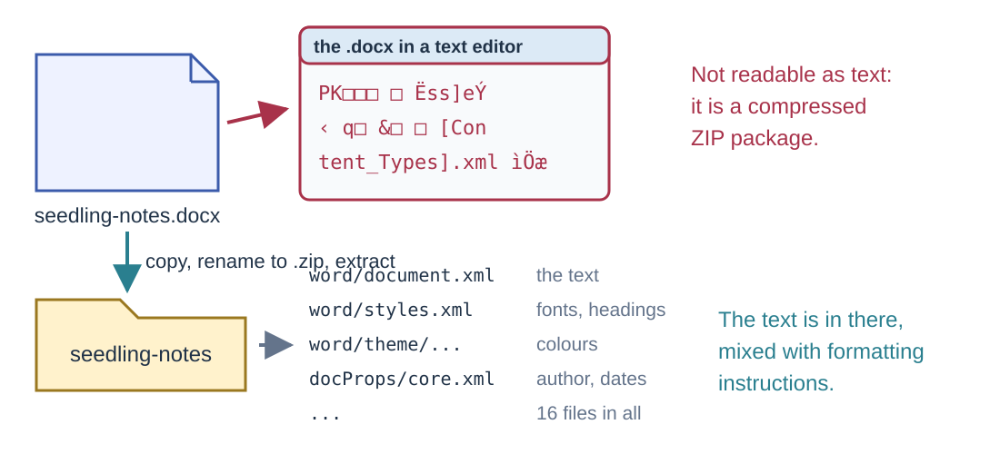
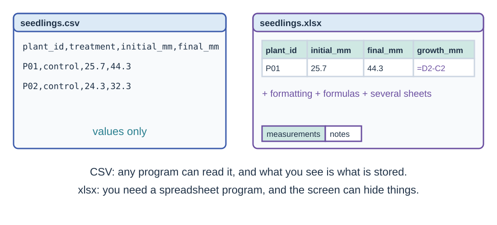
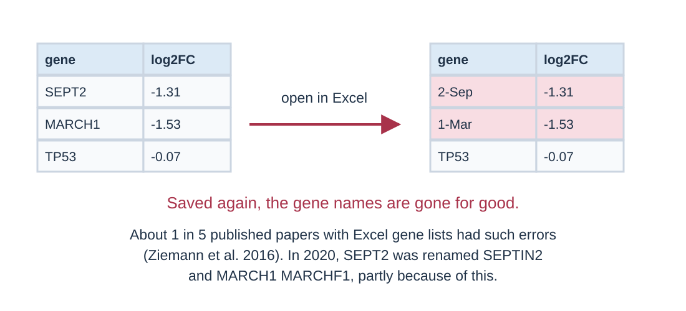
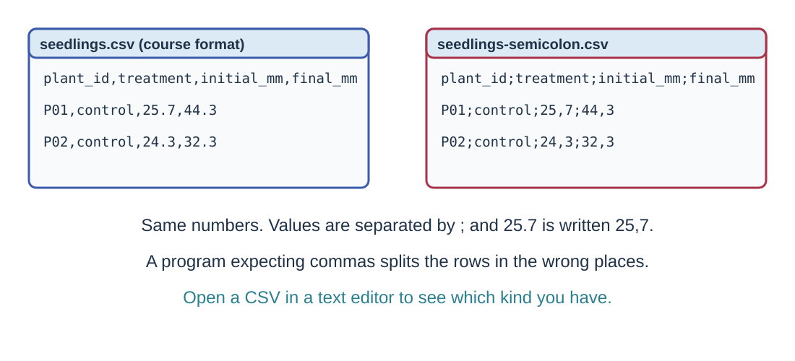
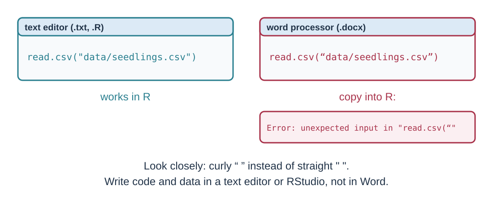
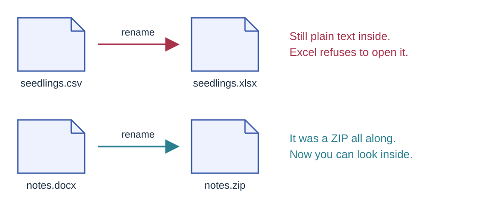

Did a treatment make seedlings grow more? The measurements are in a file. Some kinds of files any program can read; others only one program understands, and some programs change your data without asking. Which kind of file should hold our measurements?
Today you will:
download the course folder;
open different files in a plain-text editor and see what is inside;
compare the same table as CSV and as Excel;
save a plain-text note.
No programming today. Every later day reads and writes plain-text files.
Download and unpack the course files
Download the course ZIP.
Extract it (Windows: Extract All; Mac: double-click).
Move introcomputing-course to Documents.
Turn on show file extensions.
Work in the extracted folder, not inside the ZIP.
The course project folder contains data, output and reports folders; seedlings.csv is inside data.
Plain text is just characters

seedlings.csv and dna.txt open in a text editor show only letters, digits and commas; .csv, .tsv, .txt, .R, .Rmd and .md files are plain text.
seedlings.csv: a header line, then one line per plant. P01 grew 44.3 − 25.7 = 18.6 mm.
Any editor shows the same characters. R reads them directly.
A Word file is a package

A .docx shown in a text editor is unreadable; renamed to .zip and extracted it is a folder of XML files such as word/document.xml and word/styles.xml.
.docx and .xlsx are ZIP packages. PDF and PNG files are not text either.
Same table: CSV or Excel

seedlings.csv stores only values; seedlings.xlsx also stores a coloured header, a growth formula and a second sheet.
We keep data as CSV: every program reads it, and nothing is hidden.
Spreadsheets can change your data

Opening a gene list in Excel turned SEPT2 into 2-Sep and MARCH1 into 1-Mar.
Never save raw data from a spreadsheet. Close it without saving.
Swedish Excel writes a different “CSV”

The same rows in the course CSV and in a Swedish-Excel CSV, which uses semicolons between values and decimal commas such as 25,7.
Look at a CSV in a text editor before you analyse it.
Word “improves” your text

The same R line in a text editor uses straight quotes and works; in a word processor it has curly quotes and R reports an error.
Write code, data and notes in a text editor (later, RStudio), not in Word.
Extensions are labels

Renaming seedlings.csv to seedlings.xlsx leaves plain text that Excel refuses; renaming notes.docx to notes.zip works because it was a ZIP all along.
Renaming changes the name, not the contents. Converting needs Save As.
Keep the original; work on a copy
Copying the raw CSV into output creates a separate practice file while the original stays in data.
Copy data/seedlings.csv to output/seedlings-practice.csv. Experiment only on copies.
Save a plain-text note
An edited note is saved to disk and then reopened from its folder.
Save reports/day01-notes.txt. Check that the name ends in .txt, not .rtf. Close the editor, then reopen the note from its folder.
Check yourself
You open a .docx in Notepad and see PK and symbols. Is it broken?
Which file can R read directly: seedlings.csv or seedlings.xlsx?
A gene list shows 1-Mar. What happened?
A CSV line reads P01;control;25,7;44,3. Where does it come from?
Summary
Plain text (.csv, .txt, .R, .Rmd, .md) is just characters: any editor shows it, R reads it.
.docx and .xlsx are ZIP packages; PDF and images are not text either.
An .xlsx adds formatting, formulas and sheets. We keep data as CSV.
Spreadsheets can change data (gene names to dates) and write “CSV” with semicolons.
Word turns " into “ ”. Write code in a text editor.
An extension is a label. Renaming does not convert.
Next (Day 2, folders and paths): writing down exactly where a file is.
Now:open the Day 1 exercises. Leave with reports/day01-notes.txt, reports/file-types.txt and output/seedlings-practice.csv.